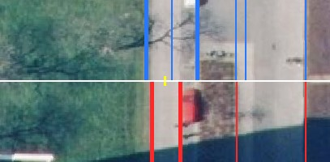
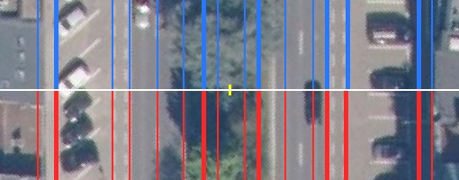
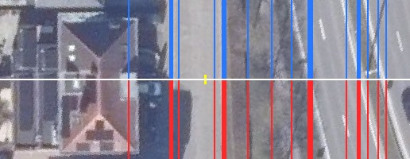
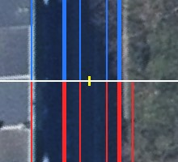
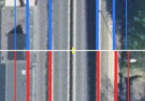
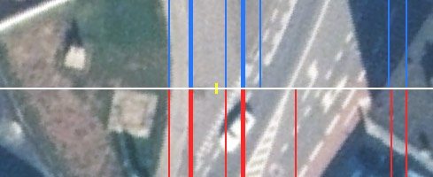
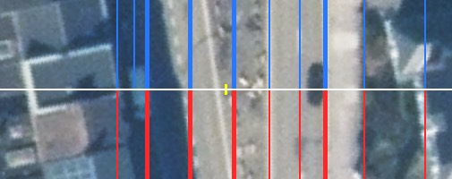
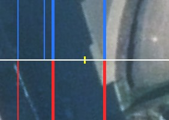
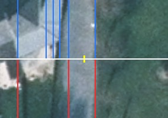
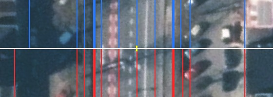

Belgie, čáry GRB a PICC: bez čar (nahoře, modře) a s čarami (dole, červeně)
Řez zleva (A) doprava (B), ±10 m podél ulice, 10 px = 1 m. Silné čáry = okraje vozovky, tenké = ostatní hranice, žlutá = střed řezu, * = odhad. Ortofoto © Digitaal Vlaanderen, SPW (Service public de Wallonie).

an2 · Louis Paul Boonstraat (antwerpen)
bez čar: pruh 3.15 · pruh 3.15 · zelen 4.8* · chodnik 1.2* · plocha 7.35*
s čarami: pruh 3.5 · zelen 7* · plocha 8.45*

ge4 · Einde Were (gent)
bez čar: chodnik 2* · parkovani 6.3 · cyklopruh 1.92 · pruh 3.1 · pruh 2.9 · krajnice 2.13 · zelen 1.62* · stromorad 3* · zelen 1.48* · pruh 3.05 · pruh 3.05 · cyklopruh 1.5 · plocha 2.3* · parkovani 7.95 · plocha 1.45*
s čarami: chodnik 2* · parkovani 6.3 · cyklopruh 1.92 · pruh 3.1 · pruh 2.9 · krajnice 2.13 · zelen 1.62* · stromorad 3* · zelen 1.48* · pruh 3.05 · pruh 3.05 · cyklopruh 1.5 · chodnik 2.15* · parkovani 8.1 · chodnik 1.45*

le1 · Herestraat (leuven)
bez čar: chodnik 5.25* · krajnice 1.05* · pruh 4.5 · krajnice 1.05* · plocha 0.35* · zelen 2.8* · stromorad 3* · cyklostezka 2.45* · zelen 2.1* · plocha 0.3* · pruh 4.5 · krajnice 1.5* · plocha 1.25* · zelen 1.25* · plocha 1*
s čarami: chodnik 5.25* · krajnice 1.05* · pruh 4.5 · krajnice 1.05* · plocha 0.35* · zelen 2.75* · stromorad 3* · cyklostezka 2.5* · zelen 2.1* · plocha 0.3* · pruh 4.5 · krajnice 1.5* · plocha 1.25* · zelen 1.25* · plocha 1*

li2 · Rue des Eburons (liege)
bez čar: chodnik 4* · parkovani 2* · pruh_piktokoridor 3.3 · cyklopruh 1.5
s čarami: chodnik 4* · parkovani 2* · pruh_piktokoridor 3.3 · cyklopruh 1.5 · chodnik 1.75*

na3 · Avenue de Stassart (namur)
bez čar: chodnik 2.45* · pruh 4.45 · plocha 9.35* · pruh 3.3 · chodnik 2.5*
s čarami: chodnik 2.45* · pruh 4.45 · plocha 9.45* · pruh 3.5 · chodnik 2.5*

ch1 · N53b (charleroi)
bez čar: chodnik 2.38* · pruh 4 · krajnice 1.85* · cyklostezka 2 · plocha 14.5* · chodnik 2*
s čarami: chodnik 2.38* · pruh 4 · krajnice 1.85* · chodnik_kola 6* · plocha 10.8* · chodnik 1.7*

ch3 · Avenue de Philippeville (charleroi)
bez čar: chodnik 1.95* · plocha 1.4* · pruh 4.8 · delici 4.9* · pruh 3.97 · pruh 3.4 · pruh 2.83 · chodnik 4.4* · zelen 6.75*
s čarami: chodnik 3.35* · pruh 4.8 · delici 4.9* · pruh 3.97 · pruh 3.4 · pruh 2.83 · chodnik 4.4* · zelen 6.75*

ch4 · Rue Tourette (charleroi)
bez čar: zelen 4.4* · chodnik 1.4* · pruh 8.6
s čarami: chodnik 5.8* · pruh 8.6

mo1 · Rue Jean Van den Eeden (mons)
bez čar: plocha 4.8* · zelen 1.2* · chodnik 1.1* · zelen 1.5* · chodnik 4.5
s čarami: zelen 8.6* · chodnik 4.5

mo3 · N50 (mons)
bez čar: plocha 9.79* · stromorad 1.5 · plocha 1.99* · cyklopruh 1.5 · pruh 3.67 · pruh 3.67 · pruh 3.67 · pruh 3.67 · chodnik 1.6* · stromorad 1.96 · plocha 11.14*
s čarami: chodnik 12.76* · stromorad 1.5 · chodnik 1.99* · cyklopruh 1.5 · pruh 3.67 · pruh 3.67 · pruh 3.67 · pruh 3.67 · chodnik 2.06* · stromorad 1.5 · chodnik 11.14*